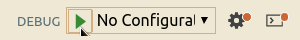
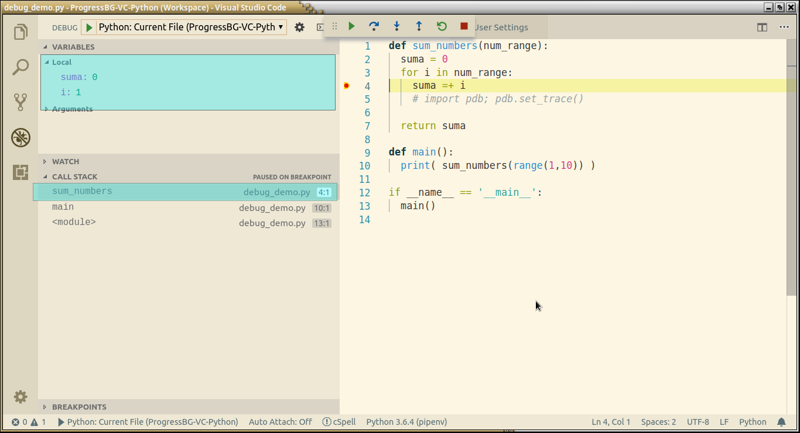

Debugging Python applications
Created for
Iva E. Popova, 2021,

How to Debug A Python Code
How to Debug A Python Code
print statements
- You can trace your code by putting a print statements in the problematic places
- PROs:
- Easy to use
- CONs:
- You have to remove them in production ready code
- Too much useless typing
Using pdb - The Python Debugger
- PROs:
- you can use it on remote servers running Python
- CONs:
- requires time to master
IDEs
- PyCharm Debugger offers an easy to use, sophisticated debugger.
- More on Debugging Python Code @jetbrains.com
- VS Code also offers a very good visual debugger, capable of setting breakpoints, inspect data, and use the debug console as you run your program step by step. Debug a number of different type of Python applications, including multi-threaded, web, and remote applications.
pdb - The Python Debugger
pdb - The Python Debugger
Overview
- pdb is a built-in module, that defines an interactive source code debugger for Python programs.
- It supports setting (conditional) breakpoints and single stepping at the source line level, inspection of stack frames, source code listing, and evaluation of arbitrary Python code in the context of any stack frame. It also supports post-mortem debugging and can be called under program control.
pdb - enter debug mode
- To enter into the debug mode from a normally running program, you can insert:
at the location you want to break into the debugger. This is useful to hard-code a breakpoint at a given point in a programimport pdb; pdb.set_trace() - pdb.py can also be invoked as a script to debug other scripts. For example:
python3 -m pdb myscript.py
Example
def sum_numbers(num_range):
suma = 0
for i in num_range:
suma =+ i
#enter debug mode and set a breakpoint
import pdb; pdb.set_trace()
return suma
def main():
print( sum_numbers(range(1,10)) )
if __name__ == '__main__':
main()
$ python3 debug_demo.py
> /tmp/examples/debug_demo.py(3)sum_numbers()
-> for i in num_range:
(Pdb)
Basic Commands
| Command | Shortcut | Action |
|---|---|---|
| help | ? | Without argument, print the list of available commands. With a command name as argument, print help about that command. |
| list | l | Displays 11 lines around the current line or continue the previous listing. |
| long list | ll | In Python 3.2 and above, shows the source code for the current function or frame |
Basic Commands
| Command | Shortcut | Action |
|---|---|---|
| step | s | Execute the current line, stop at the first possible occasion. |
| next | n | Continue execution until the next line in the current function is reached or it returns |
| break | b | Without argument, list all breaks. A line number or a function name can be passed as first argument. As second argument can be passed an expression which must evaluate to true before the breakpoint is honoured. |
| return | r | Continue execution until the current function returns. |
Start debug mode and get help - example
$ python3 -m pdb debug_demo.py
(Pdb) ?
Documented commands (type help <topic>):
========================================
EOF c d h list q rv undisplay
a cl debug help ll quit s unt
alias clear disable ignore longlist r source until
args commands display interact n restart step up
b condition down j next return tbreak w
break cont enable jump p retval u whatis
bt continue exit l pp run unalias where
Miscellaneous help topics:
==========================
pdb exec
help for given command - example
(Pdb) help break
b(reak) [ ([filename:]lineno | function) [, condition] ]
Without argument, list all breaks.
With a line number argument, set a break at this line in the
current file. With a function name, set a break at the first
executable line of that function. If a second argument is
present, it is a string specifying an expression which must
evaluate to true before the breakpoint is honored.
The line number may be prefixed with a filename and a colon,
to specify a breakpoint in another file (probably one that
hasn't been loaded yet). The file is searched for on
sys.path; the .py suffix may be omitted.
(Pdb)
long list - example
(Pdb) ll
1 -> def sum_numbers(num_range):
2 suma = 0
3 for i in num_range:
4 suma =+ i
5 # import pdb; pdb.set_trace()
6
7 return suma
8
9 def main():
10 print( sum_numbers(range(1,10)) )
11
12 if __name__ == '__main__':
13 main()
(Pdb)
Set breakpoint on given line number - example
(Pdb) b 4
Breakpoint 1 at /tmp/examples/debug_demo.py:4
(Pdb)
Continue execution to next breakpoint - example
(Pdb) c
> /tmp/examples/debug_demo.py(4)sum_numbers()
-> suma =+ i
(Pdb)
View current value of a variable:
(Pdb) p suma
3
(Pdb) p suma, i
(3, 4)
Specify a list of commands for breakpoint - example
# list breakpoints:
(Pdb) b
Num Type Disp Enb Where
1 breakpoint keep yes at /tmp/examples/debug_demo.py:4
#set commands to be executed on breakpoint 1:
(Pdb) commands 1
(com) p suma, i
(com) end
# continue to breakpoint and look that commands was executed
(Pdb) c
(0, 1)
Resources
Resources
Debug Python with VS Code
Debug Python with VS Code
Overview
- The Python extension supports debugging of a number of types of Python applications, including the following general capabilities
- Watch window
- Evaluating expressions
- Locals
- Arguments
- Expanding children
- Breakpoints
- Conditional breakpoints
- Pausing (breaking into) running programs
- Custom startup directory
Start Debugger
- You can start VS Code debugger by:
- Pressing F5
- Navigate to Debug Panel by clicking the icon , and from the top of Debug Panel click on Start Debugging 
Debug Configuration
- When you start VS Code Debugger for the first time, it will prompt you to select a configuration
{kind=link}
Debug Configuration
- To debug a simple app you can just select Python Environment from the Debug Prompt:
Debug Configuration
- But creating a launch configuration file is beneficial because it allows you to configure and save debugging setup details.
- VS Code keeps debugging configuration information in a launch.json file located in a .vscode folder in your workspace (project root folder) or in your user settings or workspace settings.
Debug Configuration
- To create a launch.json file, open your project folder in VS Code (File > Open Folder) and then click on the Configure gear icon on the Debug view top bar.
{kind=link}
Debug Configuration
- The VS Code will generate a common launch.json file for you, which you can easy modify or extend.
{kind=link}
Debug Configuration
- More info for
launch.json - Launch configurations @code.visualstudio.com
Debug actions
| Command | Keyboard Shortcut |
|---|---|
| Continue / Pause | F5 |
| Step Over | F10 |
| Step Into | F11 |
| Step Out | Shift+F11 |
| Restart | Ctrl+Shift+F5 |
| Stop | Shift+F5 |
Breakpoints
- Breakpoints can be toggled by clicking on the editor margin
- Finer breakpoint control (enable/disable/reapply) can be done in the Debug view's BREAKPOINTS section
- Breakpoints in the editor margin are normally shown as red filled circles.
- Disabled breakpoints have a filled gray circle.
More "Break" points
- Clicking with right mouse button on the editor margin allows to add "Normal Breakpoint", "Conditional Breakpoint", "Log Point"
{kind=link}
Data inspection
- Variables can be inspected in the VARIABLES section of the Debug view or by hovering over their source in the editor.
- Variables and expression evaluation is relative to the selected stack frame in the CALL STACK section.
Data inspection
{kind=link}
Variable's context menu
- Right clicking on a variable in the VARIABLES sections allows to
- Set/Copy Variable Value, Add it to WATCH
{kind=link}
Conditional breakpoints
- Conditional Breakpoints can be set by
- Expression condition - breakpoint will be hit whenever the expression evaluates to true
- Hit count - controls how many times a breakpoint needs to be hit before it will 'break' execution.
Remote Debugging
- VS Code allows remote debugging
- Remote debugging @code.visualstudio.com
Remote Debugging Steps
- pipenv install ptvsd==3.0.0
Resources
These slides are based on
customised version of
framework